刚刚拿到的ESP8266小黄板，里面的固件太老了，连一些基本的命令都不支持。所以必须要升级，以支持丰富的AT指令。
小黄板如图：
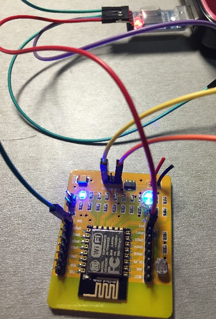
使用时，只需要连接VCC(+5V)、GND、RXD与TXD，可以分别连接到USB-TTL的VCC、GND、RXD与TXD。注意，ESP8266的RXD连接到USB-TTL的RXD，TXD连接到TXD，不要搞反了。
=======================阶段一：烧录固件=========================
首先下载固件烧录工具ESP8266Flasher-x86-v0.9.2.4.exe，然后是要烧录的固件映像v0.9.5.6 AT Firmware.bin。
把USB-TTL插入电脑，然后运行ESP8266Flasher-x86-v0.9.2.4.exe，界面如图：
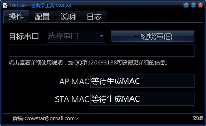
选择你的USB-TTL对应的COM端口，我这里是COM3：
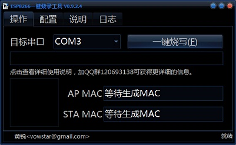
在“配置”标签页，只勾选第一项，并且路径选择为刚刚下载的v0.9.5.6 AT Firmware.bin所在位置，并且烧录地址选择为0x00000，如图：
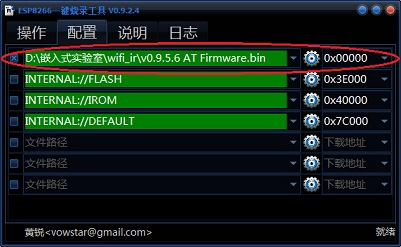
然后回到“操作”标签页，点一键烧写。此时会发现进度条并没有反应，这是因为ESP8266模块需要短接设置为烧录模式，并且需要冷启动。
设置为烧录模式的方法就是，把图中两个引脚用一根导线连接，即短路之。如果有跳线帽，可以用跳线帽。
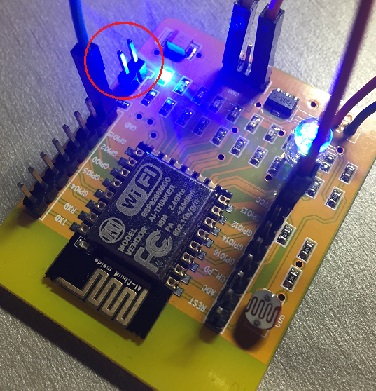
用导线短接之后，再断一下ESP8266的VCC或者GND，然后立马插回去，就是让它重启一下啦，然后就会看到进度条滚动了！
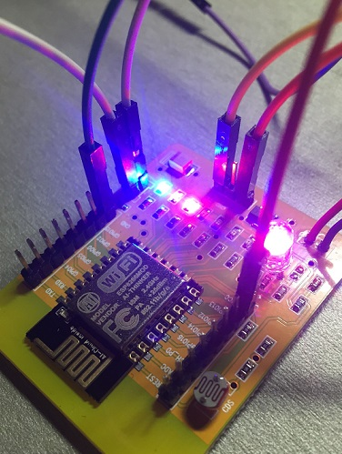
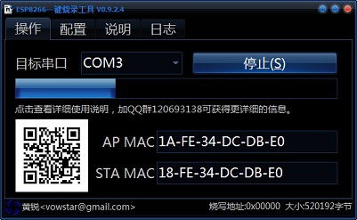
烧录完成之后，让我们来测试一下能不能用了。
拔掉短接那两个引脚的导线，再一次冷重启即可让ESP8266进入工作模式。
打开sscom42.exe（用其他的串口调试工具都行），串口号选择刚刚的COM3，波特率设置为115200，打开串口：
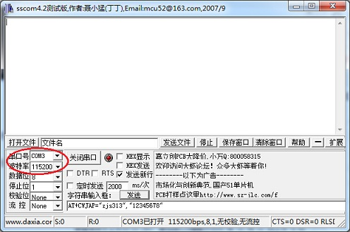
此时可以再插拔一下ESP8266的VCC或者GND引脚，使之再次冷启动。然后会看到串口输出如下：
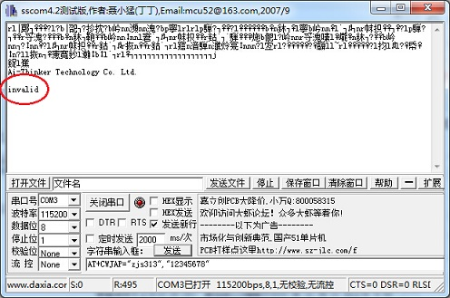
注意最后一个字样“invalid”。别急，这个不是错误，这个是因为你的ESP8266还没通过正版认证。其实没有通过正版认证的ESP8266也就一个云服务功能无法使用，其他的都能够正常工作的。如果在意这一点的话，就需要激活。但至少目前烧录固件已经成功完成了。
======================阶段二：激活=========================
关闭sscom42.exe，避免占用着COM3端口。下载激活工具串口映射服务器v2.1-客户端.exe，然后运行之，界面如图：
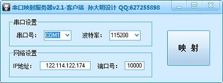
然后设置端口号为COM3，波特率为115200（默认就是115200），IP地址为122.114.122.174（默认就是122.114.122.174），端口号为1024。
然后点击“映射”，在接下来几秒内，如果看到ESP8266上的蓝色LED灯不断闪烁，说明正在激活，而且一般不会出错了。最后不管出现什么对话框，基本都已经激活成功了。在我这里，显示这样的对话框（虽然是错误提示，但是可以测试发现已经激活成功了）：
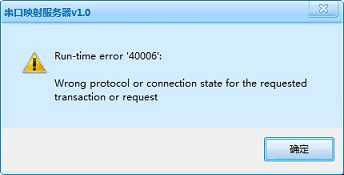
好，那就测试一下到底有没有激活成功。
打开sscom42.exe，打开COM3串口（波特率115200），然后冷启动一下ESP8266，会发现之前的”invalid”变成了”ready”，说明已经激活成功了：
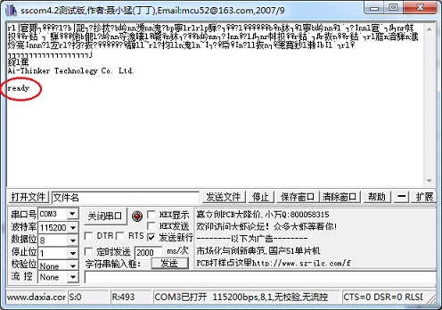